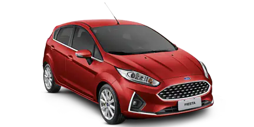
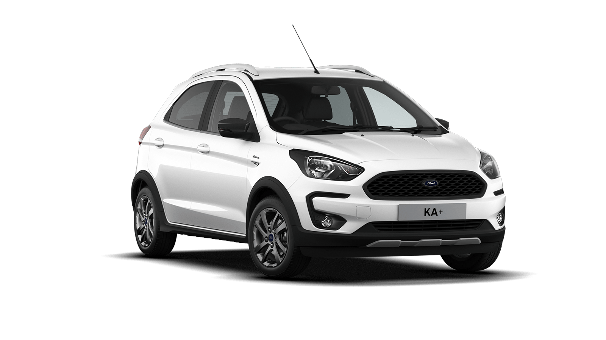
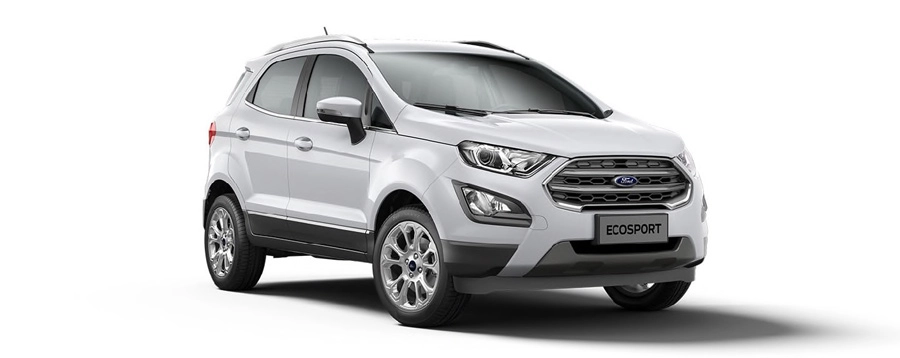

El Ford Ranger se caracteriza por su configuración técnica y capacidad de carga, que permiten un uso todoterreno intenso, con unas capacidades muy superiores a las de un SUV.
El Ford Fiesta es un utilitario práctico que se presenta en carrocerías de 3 ó 5 puertas y representa una alternativa tecnológica y muy divertida de conducir dentro de su segmento, con una gama muy completa de motores y acabados.
El Ford KA+ es un utilitario práctico de tamaño pequeño disponible con carrocería de tres puertas. Respecto a la segunda generación el Ford Ka+ nos ofrece un importante cambio, ofreciéndonos ahora, además de un mayor tamaño, un cambio de filosofía que hace que estemos ante un producto de corte más sencillo y práctico.
El Ford EcoSport se caracteriza por ser un coche de tamaño comedido pensado para destacar frente a sus rivales por unas características todocamino notables como son su altura libre al suelo o la disponibilidad de tracción total. Aunque se fabrica en diferentes países, la versión europea del EcoSport se fabrica en exclusiva en la factoría de Ford de Rumanía.